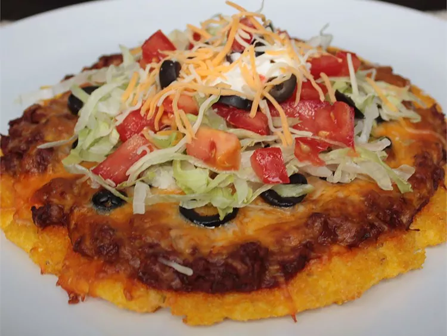

Mexican Polenta Pizza

Description
This fun polenta pizza fuses baked polenta with pizza, and, to give it anoher twist, it's topped with delicious Mexican flavors.
Ingredients
- 1 cup cornmeal
- 3 cups skim milk
- 1/2 teaspoon kosher salt
- 1 tablespoon olive olive
- 5 ounces lean ground beef
- 1 1/2 cup red chile sauce (such as Herdez Red Guajillo Chile Mexican Cooking Sauce)
- 1 cup Mexican shredded cheese blend, plus more for sprinkling on top
- 1 cup shredded lettuce, or to taste
- 1 tomato, diced, or to taste
- 2 tablespoons sliced pitted black olives, or to taste
- 2 tablespoons sour cream, or to taste
Steps
- Stir cornmeal, milk, and salt together in a medium saucepan, and cook over medium-high heat, stirring constantly, until mixture comes to a boil and thickens enough to pull away from the sides of the pan, about 15 minutes. Remove from heat and stir in the olive oil. Spread on a greased cookie sheet. Cool in the refrigerator for 1 hour.
- Preheat the oven to 400 degrees F.
- Bake polenta crust in the preheated oven for 10 to 15 minutes.
- Meanwhile, heat a nonstick skillet over medium-high heat, and cook and stir ground beef in the hot skillet until browned and crumbly, 5 to 7 minutes. Pour in red chile sauce, and simmer until thickened, about 10 minutes.
- Top polenta crust with meat sauce and cheese. Return to the oven; bake until cheese is melted, 10 to 12 minutes more.
- Top with lettuce, tomato, black olives, and sour cream. Sprinkle with addiional shredded cheese, if desired.